Derniers conseils
Classes -
Races
Sexe et alignement -
Votre animal de compagnie -
En cas d'urgence... -
Choisir sa
classe
La classe que vous jouerez aura beaucoup d'influence sur votre
partie, et pas seulement sur vos caractéristiques ou vos points de vie de
départ. Voici un bref descriptif de chacune d'elles, classées
grossièrement par ordre croissant de difficulté.
|
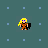
|
La Valkyrie (Valkyrie)
Les valkyries sont de redoutables guerrières, dotées d'une force et
d'une constitution remarquables. Issues du Grand Nord, elles sont
également insensibles au froid, et d'une discrétion exemplaire. Enfin,
elles débutent avec un équipement fort utile, comprenant notamment un
épée longue +1 et un petit bouclier +3. Un choix privilégié pour une
première ascension.
|

|
Le Barbare (Barbarian)
Les barbares sont de puissants guerriers, pour qui savoir se battre
est une qualité vitale. Dotés de caractéristiques physiques
exceptionnelles et d'armes impressionnantes (une hache et une épée),
particulièrements aptes à survivre en milieu hostile, les barbares sont
également une classe recommandée pour les joueurs débutants.
|
|
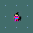
|
Le Samouraï (Samurai)
Les guerriers d'élite japonais, les samouraïs, constituent une autre
classe de dangereux guerriers. À l'inverse des barbares, ils doivent leur
réputation à leur rapidité et à la finesse des armes qu'ils manient. Les
samurais débutent leur quête avec notamment un katana (une version
améliorée de l'épée longue), une sarbacane et des fléchettes adaptées, et
une armure japonaise.
|
|
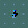
|
Le Sorcier (Wizard)
À l'opposé des trois classes précédentes, les sorciers possèdent
généralement de piètres caractéristiques physiques. Cependant, ce manque
est largement compensé par leur intelligence et leur connaissance de la
magie, si bien qu'un sorcier expérimenté est aussi, voire plus, dangereux
qu'un guerrier en armure. Les sorciers commencent leur exploration avec
un équipement de choix, comprenant entre autres une cape de résistance à
la magie, des parchemins, des potions et des anneaux magiques.
|
|
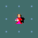
|
Le Prêtre (ou la Prêtresse) (Priest(ess))
Les prêtres sont principalement des lanceurs de sorts, mais qui
savent également se battre correctement au corps-à-corps pour autant que
ce soit avec une arme contondante (massue, bâton...). Mais leur grande
qualité est de s'être vu conférer par leur dieu le pouvoir de distinguer
les objets maudits ou bénis des objets normaux avec un simple regard. Ils
entrent dans le donjon avec, entre autres, une robe, une masse d'arme, de
l'eau bénite et de l'ail.
|
|
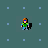
|
Le Rôdeur (Ranger)
Les rôdeurs sont des chasseurs solitaires vivant généralement dans
les bois, et donc sans doute un peu mal à l'aise dans un donjon fermé.
Mais ils n'en restent pas moins des archers hors-pair et sont
naturellement fort discrets et observateurs. Leur équipement de départ
contient, évidemment, un arc et de nombreuses flèches, mais également de
bonnes réserves de nourriture.
|
|
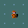
|
L'Archéologue (Archeologist)
Les archéologues sont avant tout des explorateurs, sachant se
déplacer rapidement et habilement au milieu des dangers du donjon.
Armés comme il se doit d'un fouet, les archéologues disposent également
pour mener à bien leurs expériementations scientifiques d'une pioche,
d'un sac, d'une touchstone pour identifier les pierres
précieuses, ainsi que d'un kit pour faire des boîtes de conserve.
|
|
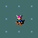
|
Le Voleur (Rogue)
Furtifs et attentifs, les voleurs sont parfaitement à l'aise dans les
donjons inconnus, et apprennent rapidement à repérer pièges et portes
secrètes au premier coup d'oeil. Leur force réside dans leur capacité à
frapper par surprise - s'ils en ont l'occasion. Ils entrent dans le
donjon armés ente autres d'une petite épée et d'un lot de dagues (pour
lancer), une armure légère, un sac (pour accumuler les richesses !),
d'outils pour crocheter les serrures et d'une potion empoisonnée.
|
|
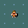
|
L'Homme (ou la Femme) des cavernes
(Cave(wo)man)
Assez proches physiquement des barbares (bien qu'un poil plus
polyvalents), les hommes des cavernes sont toutefois beaucoup plus
primitifs (c'est possible !), et ne disposent pas d'armes évoluées : ils
entrent dans le donjon avec pour seul équipement une massue, une fronde,
des pierres et une armure en cuir sommaire.
|
|
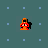
|
Le Moine (Monk)
Les moines sont des combattants qui, grâce à leur entraînement mental
autant que physique rigoureux, ont appris à se servir de leurs poings
presque aussi efficacement que s'ils avaient une arme en main, tout en
étant des lanceurs de sorts convenables. En compensation, ils ne savent
pas manier efficacement la plupart des armes, et sont fortement gênés par
le port d'une armure sur le corps (autre qu'un T-shirt, qu'une cape ou
qu'une robe). Ils sont également supposés être exclusivement végétariens,
c'est pourquoi ils emportent en prévision de nombreux fruits et rations
de nourriture non animale ; pour compenser leur indisposition vis-à-vis
des armures de corps, ils possèdent également une robe +1, des gants en
cuir +2 ainsi que 3 potions de soin.
|
|
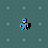
|
Le Chevalier (Knight)
Les chevaliers sont d'excellents combattants, parfaitement équipés,
et doués d'un charisme hors norme. En retour, ils doivent respecter un
code de conduite propre aux chevaliers : ne pas attaquer de créature en
fuite ou incapable de se défendre, ne pas manger à moins d'avoir faim, ou
encore ne pas voler les marchands. Ils commencent leur aventure avec une
armure complète (cotte de mailles, casque, bouclier et gants) et une épée
longue +1 ; leur animal de compagnie est un poney disposant d'une selle,
qu'ils peuvent monter et utiliser pour charger avec leur lance +1. Les
chevaux étant végétariens, ils disposent également d'une bonne provision
de pommes et de carottes pour le nourrir.
|

|
Le Guérisseur (Healer)
Les guérisseurs sont des experts en tout ce qui touche à la santé et
à la médecine. Le fait qu'ils ne soient ni de très bons combattants, ni
de très bons lanceurs lanceurs de sorts les rend assez difficiles à
jouer ; cependant, il sont capables de se soigner ou de soigner leur
pet aisément, et leur équipement de départ est assez fourni,
comprenant notamment un scalpel, des gants, des potions de soin, un
stethoscope, pas mal d'or (le métier paie bien...) et une baguette de
sommeil (pour anesthésier ses victimes...).
|
|
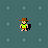
|
Le Touriste (Tourist)
Les touristes constituent la classe la plus difficile à jouer : peu
de points de vie, pas d'arme de mêlée ni d'armure (à l'exception d'une
chemise hawaïenne qui ne donne aucun bonus à l'AC...), ce sont vraiment
des touristes... Cependant, ils sont relativement polyvalents, et leur
équipement de départ est assez varié : des dards +2 à lancer, beaucoup de
nourriture, des potions de soin, des cartes, de l'or, une carte de crédit
et même un appareil photo (utile pour effrayer les monstres) !
|
Choisir sa
race
Certaines classes vous permettent d'incarner une autre race
qu'un humain, ce qui a ses avantages et ses inconvénients. Voici toutes
les races qu'il est possible de jouer dans Nethack (sans ordre
particulier) :
|
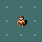
|
L'Humain (Human)
Les humains constituent la race la plus répandue à la surface du
monde, c'est pourquoi ils sont considérés comme « la référence » : de
constitution et d'intelligence moyenne, sans aptitude spéciale, leur
particularité est de pouvoir jouer n'importe quelle classe de personnage.
|
|
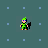
|
L'Elfe (Elf)
Les elfes, quoique possédant généralement des caractéritiques
physiques plus faibles que les humains, brillent par leur intelligence et
et leur sagesse ; de plus leurs sens sont très développés. Enfin, les
armes et armures de manufacture elfe sont très recherchées.
|
|
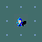
|
Le Nain (Dwarf)
Les nain, à l'inverse, sont peu communicatifs et peu versés dans la
magie. En revanche, ils sont particulièrement forts et résistants, et les
armures naines sont réputées pour être de meilleure qualité encore que
les armures elfes.
|
|
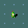
|
Le Gnome (Gnome)
Un peu plus doués pour la magie que les humains, mais aussi plus
faibles physiquement, les gnomes peuvent parfois être une alternative
intéressante, surtout si vous comptez aller dans les Mines des Gnomes (où
vos semblables ne vous attaqueront pas).
|
|
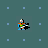
|
L'Orc (Orc)
Cruels, violents sans aucun respect pour quoi que ce soit, les orcs
haïssent toutes les créatures, y compris les autres orcs ; leur haine
envers les elfes est toutefois inégalée. Plutôt primitives, les armes et
les armures orques sont généralement de mauvaise qualité.
|
Choisir son sexe et
son alignement
Vous pouvez généralement choisir à votre convenance le sexe de votre
personnage (sauf pour une valkyrie, qui est toujours une femme) ; cela
n'a toutefois que très peu d'influence sur le jeu (en tout cas, pas sur
vos statistiques de départ).
Si vous jouez une classe et une race qui s'y prête, vous pouvez
également choisir votre alignement. Un alignement loyal
(lawful) signifie que vous êtes censé respecter certaines
règles de bonne conduite (ne pas voler les marchands, ne pas piller les
tombes, etc.), tandis qu'un alignement chaotique (chaotic)
signifiera au contraire que vous ne vous embarrasserez d'aucune règle de
ce genre (sauf si cela concerne votre dieu...). L'alignement neutre
(neutral) correspond à un comportement « standard »,
c'est-à-dire que vous pouvez raisonnablement transgresser certaines
règles (tant que vous y trouvez un bénéfice), mais qu'il vaut mieux
éviter la violence gratuite. Sachez qu'il n'y a pas d'alignement meilleur
qu'un autre, chacun a ses avantages et ses inconvénients.
Enfin, les races autres que les humains sont toujours d'un alignement
précis : loyal pour les nains, neutre pour les gnomes et chaotique pour
les orcs et les elfes.
Votre animal de
compagnie
Vous aurez sûrement remarqué, au cours de votre exploration, le
chaton ou le chiot (voire le poney) qui vous accompagne depuis votre
entrée dans le donjon. Si vous jouez avec une version graphique, il sera
surmonté d'un petit coeur. Il s'agit de votre animal de compagnie
(pet) : non seulement il ne vous attaquera pas (sauf mauvais
traitement), mais il vous aidera à attaquer les monstres du donjon (du
moins, ceux contre lesquels il estime avoir une chance de gagner...).
Étant beaucoup plus rapide que vous, il vous sera souvent d'une aide
inestimable en début de partie. De plus, son instinct
l'empêchera généralement de mettre stupidement sa vie en danger :
essayez d'interpréter ce qu'il fait ou ne fait pas, cela ne pourra que
vous être utile !
Comme vous, votre pet doit se nourrir pour survivre ; dans
le cas d'un chat ou d'un chien, il pourra manger les cadavres qu'il
trouve par terre, mais dans le cas d'un cheval, il faudra lui trouver une
nourriture adaptée. Votre pet a aussi un certain nombre de
points de vie (qui peuvent remonter avec le temps), et s'il reçoit
suffisamment de dommage, il peut mourir. Enfin, votre pet
gagne de l'expérience avec les combats, si bien que, convenablement
entraîné, il pourra venir à bout de la plupart des ennemis des niveaux
supérieurs du donjon.
Attention : pour que votre pet vous suive quand vous
changez de niveau dans le donjon (par un escalier ou un piège
quelconque), il doit se trouver sur une case adjacente à la vôtre ;
certains monstres (puissants) vous suivront de la même manière.
Enfin, il est possible d'acquérir un ou plusieurs autres
pets au cours de la partie : à vous de faire preuve
d'imagination pour trouver comment !
À l'aide, je vais
mouriiiiiiiir !
Pas de panique ! La règle d'or de Nethack lorsque vous êtes en
difficulté est de s'arrêter et de réfléchir. Dans 95 % des cas
du temps, il y a un moyen de s'en sortir en utilisant un objet approprié
dans son inventaire ou en priant. Sur les 5 % de cas restants, 95 %
auraient pu être évitées si vous aviez pris des précautions auparavant
(ne pas vous laisser enfermer dans un cul-de-sac, avoir déposé certains
objets pour ne pas être Burdened, etc.). Certes, il reste
toujours une faible probabilité de cas de « pas de chance » (un gnome
muni d'une baguette magique de mort, par exemple), mais cela reste
rare.
Voici une petite liste de chose auxquelles penser lorsque vous êtes
en danger (grosso-modo par ordre de priorité) ; n'hésitez pas à
les cumuler !
- 1. Fuir (à la condition que vous soyez au moins aussi rapide que
votre adversaire !). Cela vous permettra de récupérer quelques points de
vie, éventuellement de gagner les escaliers et de changer de niveau ou de
fermer une porte au nez de la créature, laissera à votre pet
l'occasion d'attaquer cet ennemi (pas toujours...), voire, si vous êtes
plus rapide que votre ennemi et que vous observez soigneusement le
décompte des tours, vous permettra d'attaquer sans risque de riposte.
- 2. Prier. Si vous êtes réellement en danger (peu de points
de vie, affamé, etc.), votre dieu pourra peut-être vous aider.
Attention ! Prier trop souvent risque de mettre votre dieu en colère, et
le remède sera pire que le mal !
- 3. Écrire « Elbereth ». Si vous n'avez rien d'autre, utilisez vos
doigts (« E- ») : même si les écritures dans la poussière
s'effacent vite, c'est un moyen rapide et peu coûteux d'écrire. Notez que
vous pouvez vous tromper en écrivant (surtout si vous êtes aveugle ou
confus), qu'il vaut mieux répéter l'opération à chaque tour pendant
quelque temps pour se prémunir de l'érosion (sauf si vous gravez dans le
sol), et que certaines créatures (les elfes, par exemple...) ne craignent
pas Elbereth. Notez qu'il peut être judicieux de graver Elbereth à des
endroits stratégiques avant d'être en danger si vous utilisez un
moyen de graver qui demande beaucoup de temps.
- 4. Se téléporter (avec un parchemin, un baguette, un sort...). Assez
aléatoire si vous ne savez pas contrôler votre téléportation, car il se
peut très bien que vous vous retrouviez assez vite face au même danger
que vous fuyiez, ou encore face à un danger moindre, mais suffisant pour
vous tuer dans l'état où vous êtes...
- 5. Utiliser un objet sur la créature qui vous attaque. N'hésitez pas
à utiliser une baguette, une potion ou un autre objet au nombre
d'utilisations limitées ! Mieux vaut une baguette magique vide qu'une
mort avec une baguette pleine dans son inventaire... Le plus efficace est
une baguette de mort - bien qu'il soit peu probable que vous en trouviez
une en début de partie -, mais une baguette de téléportation (wand
of teleportation (pour téléporter le monstre), une baguette de feu
(wand of fire), une baguette d'excavation (wand of
digging) (pour s'échapper en faisant un trou dans le sol), une
potion de paralysie (potion of paralysis) ou même un
appareil photo (expensive camera) (pour éblouir un ennemi)
sont tout à fait adaptées. En dernier recours, vous pouvez même envisager
de lire un parchemin de génocide (scroll of genocide) pour
éliminer la créature qui vous attaque...
- 6. Boire une potion de soin/se jeter un sort de soin. Souvent
d'efficacité limitée, car vous risquez de perdre autant de points de vie
que vous en gagnez pendant le tour où vous vous soignez. Ceci dit, cela
peut donner le temps à votre pet d'achever votre ennemi.
Attention aussi aux sorts qui n'ont pas 0 % de chances d'échec !
- 7. Utiliser une baguette non identifiée. Plutôt hasardeux, mais avec
de la chance, vous tomberez sur une baguette pouvant infliger des
dommages (wand of striking, wand of fire...)
- 8. Boire une potion non identifiée. Si tout le reste a échoué,
peut-être tomberez-vous sur une potion de soin...
- 9. Lire un parchemin non identifié. Pour les cas vraiment
désespérés, en espérant tomber sur un parchemin de téléportation ou de
génocide...
C'est
parti !
Bon, hé bien, voilà, si vous avez lu attentivement tous les
tutoriels, vous devriez connaître toutes les commandes utiles pour
survivre. Il est temps maintenant d'entamer une partie sérieuse :
choisissez votre classe (de préférence une valkyrie ou un barbare), et
partez à la découverte du monde ! N'hésitez pas non plus à conserver une
feuille de note temporaire (« j'ai laissé mon chien au niveau 3 quand je
suis tombé dans un trou ») ou permanente (« le corps de telle créature
est empoisonné »). Enfin, on ne le répètera jamais assez, Nethack n'est
pas Quake, vous pouvez à tout moment vous arrêter, considérer la
situation et réfléchir. Une des maximes préférées des joueurs de
Nethack est « The DevTeam Thinks To Everything », soit « les développeurs
du jeu pensent à tout » : si vous avez à un moment donné une idée
farfelue, essayez de la mettre en pratique, si ça se trouve, elle n'est
pas si farfelue que cela !
Revenir à la liste des tutoriels
2003 - Erwan Grasland-Mongrain (m'écrire...)